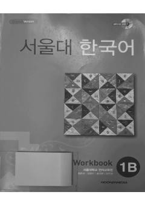

SNKoreys tilini o'rganish uchun Seul Milliy Universitetining amaliy ish daftari.
Ushbu qo'llanma Seul Milliy Universiteti Til ta'limi instituti tomonidan tayyorlangan koreys tili darsligining 1B ish daftari hisoblanadi. Kitob talabalar va mustaqil o'rganuvchilarga grammatik qoidalarni mustahkamlash va mashq qilishda yordam beradi.